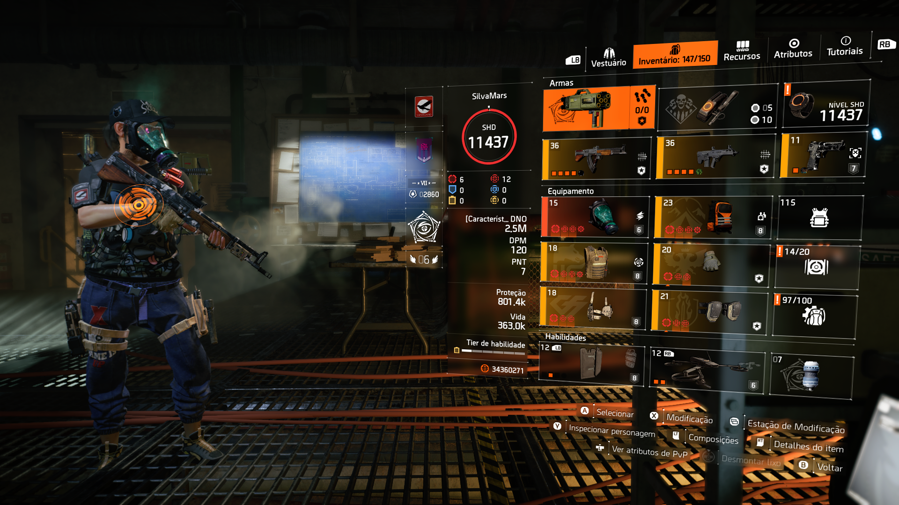

Striker / DPS Sustentado
Striker DPS
Build focada em cadência, stacks e dano sustentado. É uma das melhores escolhas para farm, missões, raids e atividades em grupo quando o jogador consegue manter acertos constantes.
DPS
PvE
Raid
Farm
Ver guia completo